ACTUAL IMPLEMENTED GAME CAPTURES · 19 OCTOBER 2026 · AWAITING REVIEW
Race & throw + bigger water splashes
Three racers follow the oval while sideline players and bots throw at them. Racers and throwers have separate standings and winners. Hits pay +50, +75, +100… in launch order; a resolved miss resets the streak. Automatic supplies and score-based upgrades keep the throwing game going.
Rules, verification and recovery · Tests · Release build · Rollback verification
Choose your role
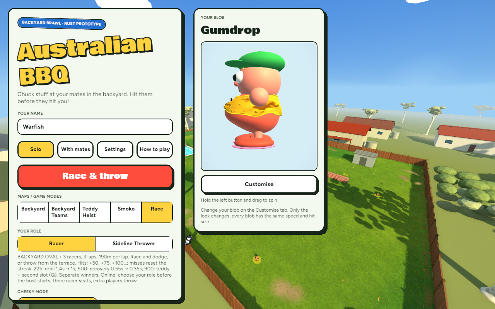
Maps / Game modes → Race → Racer or Sideline Thrower. Online guests choose before the host starts. Three racing seats; extra players throw.
Both games in one arena
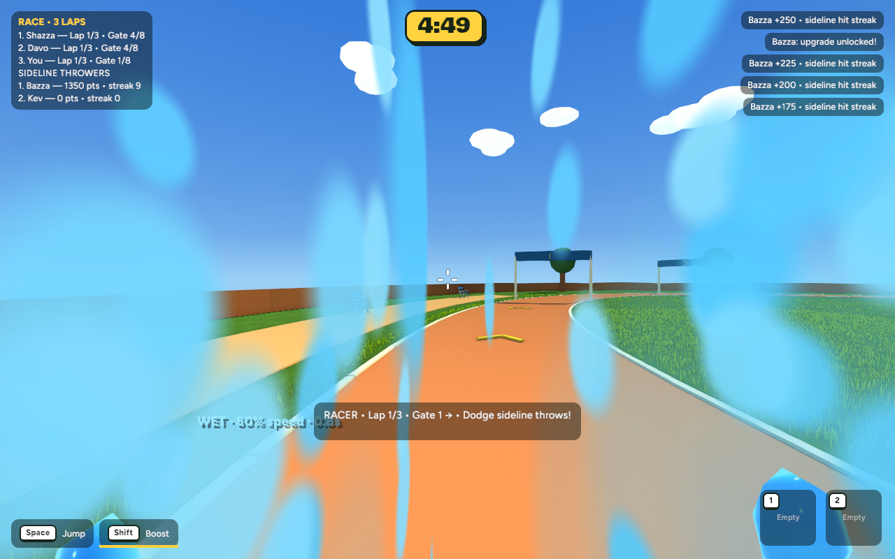
Racer: ordered gates, three laps, dodging and bounded slowdowns.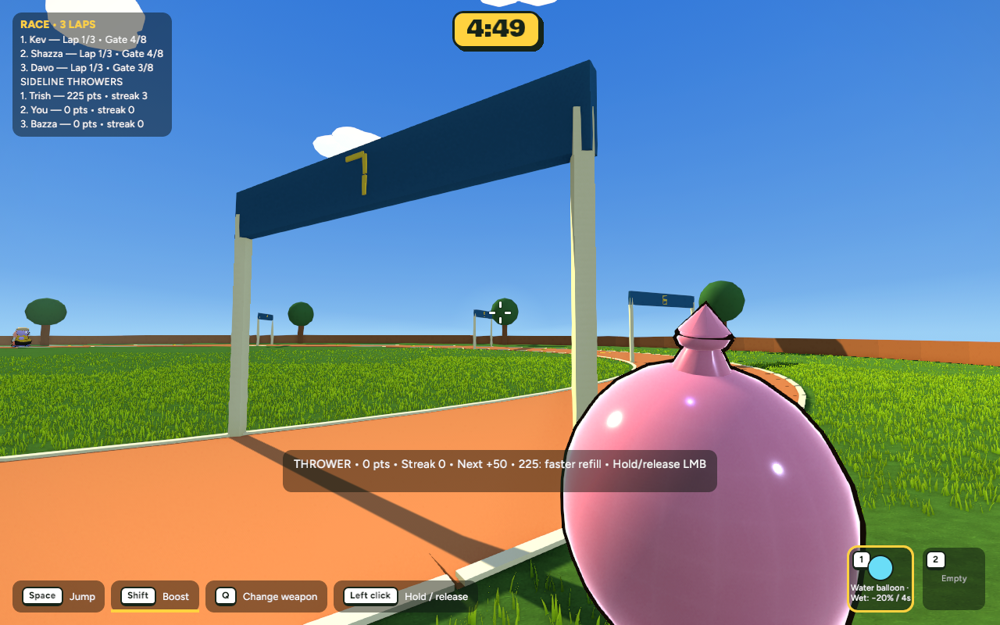
Thrower: score, streak, next hit value and next upgrade. Hold and release left click; Q swaps items after the teddy unlock.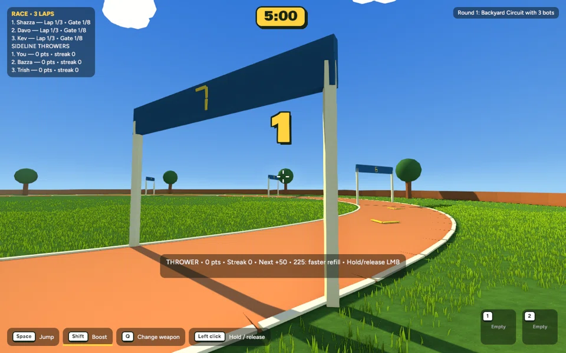
Actual race replay. Bots run and throw through the same rules; no points are fabricated for this recording.
Separate results
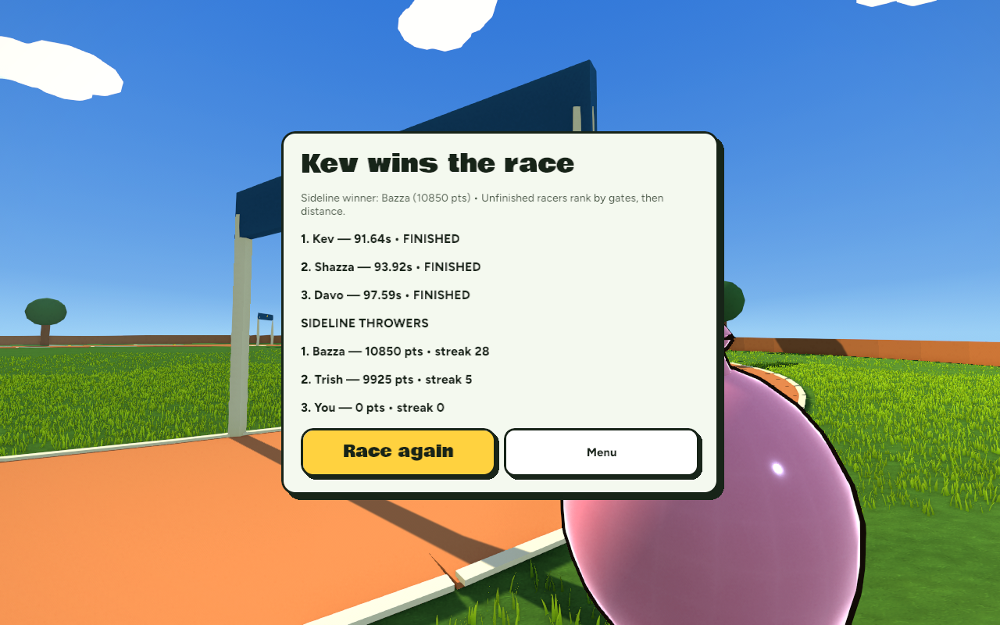
Full race completion and final throwing standings. Tied throwing leaders share the win.
A more dramatic balloon burst
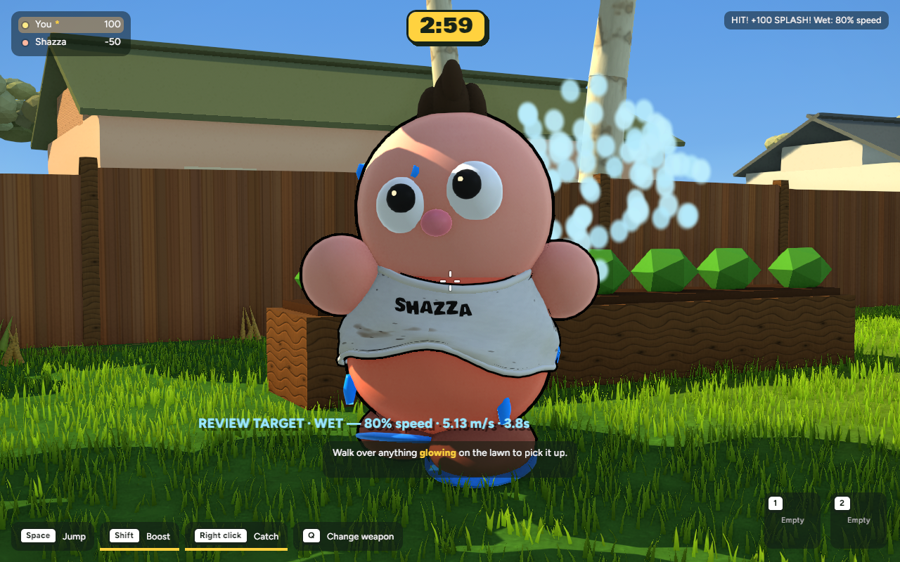
Before: the previous water-balloon splash.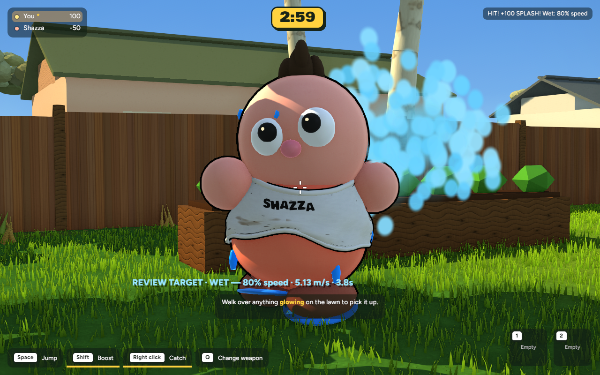
After: a wider radial burst and a short water-mist puff.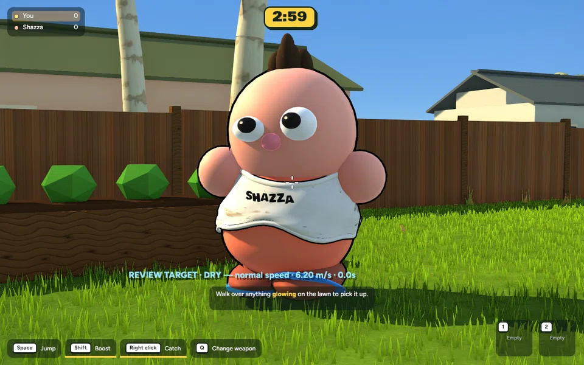
Actual balloon hit, wet droplets and normal movement returning. Standard modes retain 20% slowdown for four seconds.
Online check
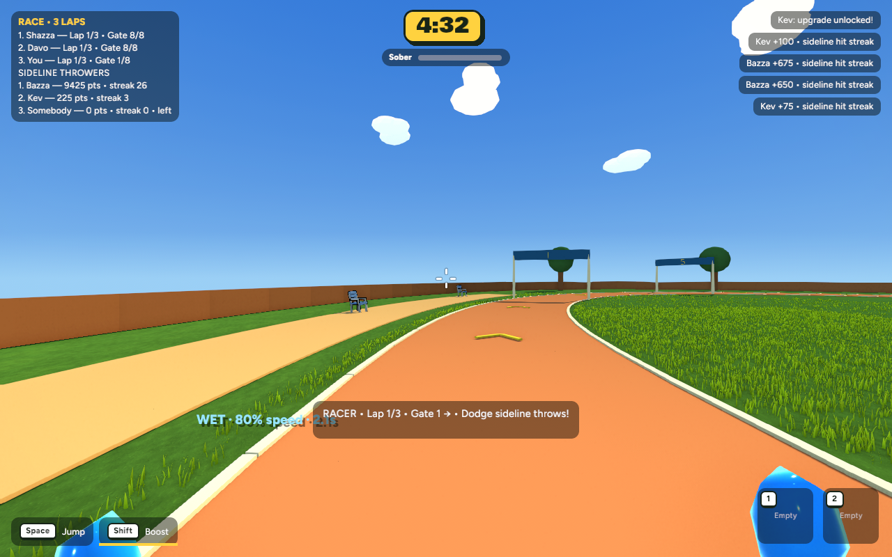
Host: authoritative racer progress, throws, scores and upgrades.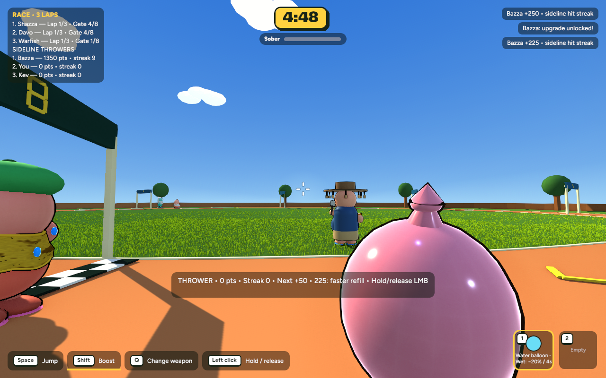
Guest: joined as a thrower and sent an actual throw through the local relay.Protocol 11: all players need this build. Tested with two local game instances and the real relay, plus headless authority and snapshot tests. Separate machines, WAN latency and packet-loss conditions were not tested.
Performance
| Scene | Before | After | Frame time | Retained images |
|---|
| held | 8.202 ms / 121.93 FPS | 8.066 ms / 123.98 FPS | -1.7% | 38.9 MB |
| sideline | 6.887 ms / 145.19 FPS | 6.845 ms / 146.10 FPS | -0.6% | 39.8 MB |
1280×800, same fixed scene/camera, 600 measured wall-clock intervals, no compiler running. Race now includes two additional thrower bots, active projectiles and effects. These measurements are not GPU timestamps. A hidden developer-text allocation issue discovered during verification was fixed; the sustained full-round capture checks retained memory too.
Existing modes
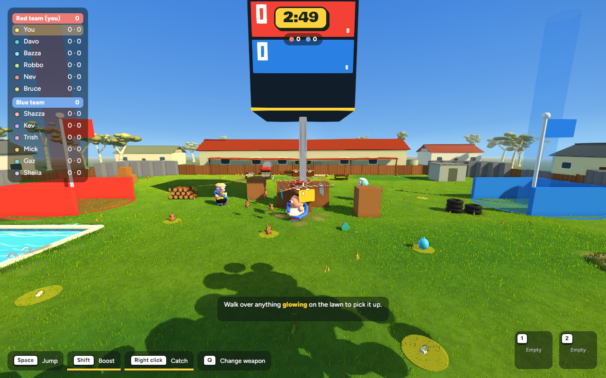
Heist smoke check.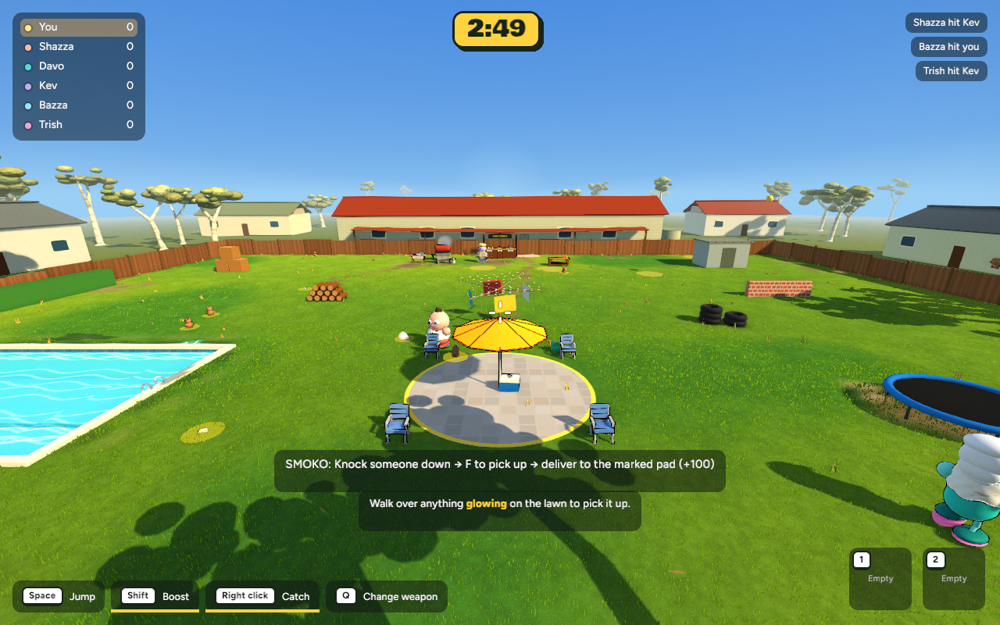
Smoko smoke check; standard Backyard also exercised in the balloon replay.Test
cd /Users/marcus/Claude/australian-bbq/rust
~/.cargo/bin/cargo run -p bbq_app --release -- --mode race --sideline
Omit --sideline to race. No commit or push. Selective recovery instructions are in the checkpoint.